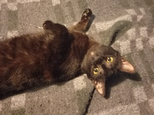
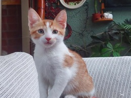

| Foto Gato | Datos |
|---|---|
 |
Número de Chip: 144125412816282 Nombre: Lucy Edad: 11 meses Tamaño: Mediano Sexo: Hembra Esterilizado: No |
| Foto Gato | Datos |
|---|---|
 |
Número de Chip: 556322940004111 Nombre: Ayumu Edad: 2 Meses Tamaño: Pequeño Sexo: Macho Esterilizado: No |
Somos una organización sin fines de lucro que fomenta la tenencia y adopción responsable. Rescatamos, rehabilitamos y reubicamos perros y gatos abandonados en hogares comprometidos y que los consideren un miembro más de la familia.
Franccesco Artuso
Geraldine Bastias
Alexander Lara
Matias Peñaloza